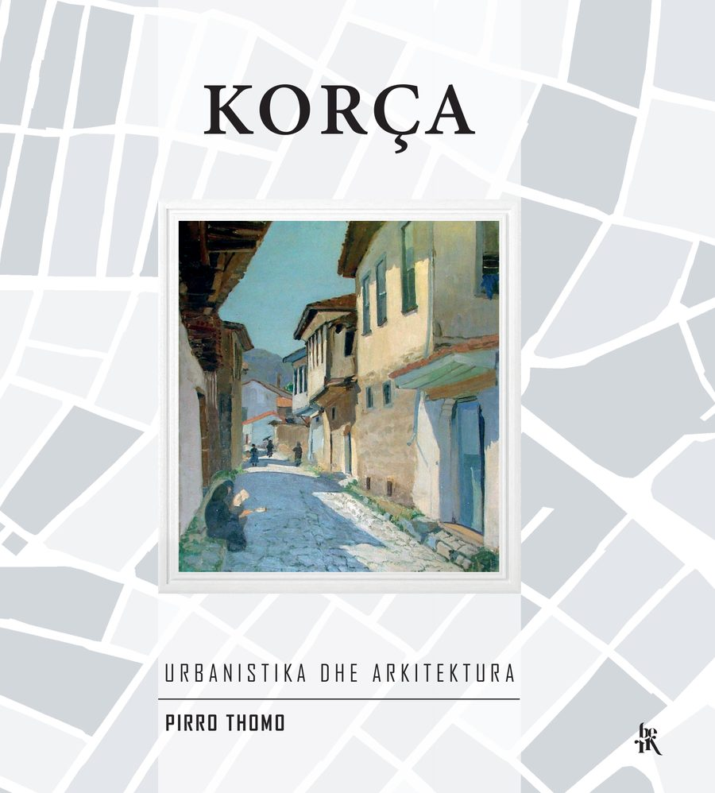

Korça: Urban Planning and Architecture
Pirro Thomo · Third edition · 2022
The history of Korça's urban and architectural development, and the new character it gave to the town's planning, its houses, its bazaar and its public buildings. Dedicated to the citizens of Korça.
Second edition, Academy of Sciences, 2012 — 432 pages: read · download (14 MB)
- Pages
- 360
- Year
- 2022
- Publisher
- Berk, Tiranë
- ISBN
- 978-9928-368-01-0
- Language
- Albanian